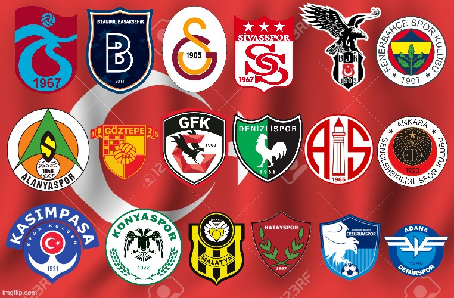

Turkey clubs
Beshiktash
Most of the times, being the third biggest club in your city is not a great source of joy and pride, but Beşiktaş (pronounced “beshiktash”) are one of the few exceptions to this universal unwritten rule.
Continue ReadingFenerbahce
Based in the Asian side of Istanbul, Fenerbahçe have long ago reached the point of being considered a European great, proof of which is that in 2006, just before celebrating the 100th anniversary of their founding.
Continue Reading
Galatasaray
Galatasaray are indeed the historic number one club in Turkey, although Fenerbahçe and, to a lesser extent, Beşiktaş fans may have their objections. Looking at Galatasaray's numbers it's rather safe to claim that they are the biggest Turkish club.
Continue ReadingTurkey League
Turkey's top football flight may not be receiving the media coverage that big western European leagues enjoy, but it is one of the most followed championships in Europe, considering not only the country's vast football-crazy population, but also the millions and millions of Turks who live abroad, and make sure to be close to a TV set every weekend, to watch their beloved teams that make up the Süper Lig.
Football has been played in Turkey since the last years of the 19th century, and city leagues started being organized in 1904. Turkish Football Championship started in 1924 and was the first national championship in Turkish football, although not played as an all-play-all tournament and not organized by Turkish Football Federation (TFF).